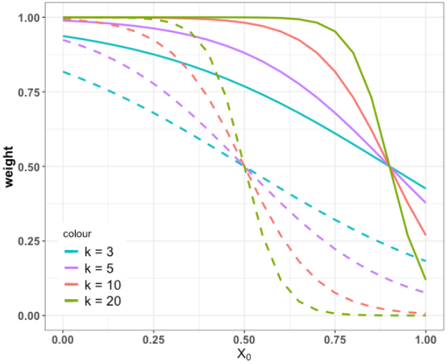

The goal is to test whether a gene is associated with a disease phenotype, based on missense genetic variants in this gene. For a dichotomous disease phenotype, we define relative risk (RR) as the occurrence of missense variants among cases versus that in control group.
\[ \begin{align} H0: RR = 1 \\ H1: RR > 1 \end{align} \] We assume that the relative risk of a missense variant in a true risk gene is correlated with in silico predicted deleteriousness (prediced by REVEL score) and this relationship can be captured by a sigmoid function (soft threshold). The weight of each missense variants for a given region or a gene by their in silico prediction (x) in a sigmoid function f(x) = L/(1 + exp(- K * (x - x0)), and then use logistic regression to test the association. When K is sufficiently large, the sigmoid weight function changes abruptly at midpoint such that it is equivalent to a hard threshold. For example in the plot below, for a genetic variant with REVEL score 0.5 (dashed) and score 0.9 (solid), the weight function gets closer to hard threshold when K increases.

For a given gene, RaDtest search for an optimal threshold \(x_0\) for REVEL score where the maximal significance in case-control comparison is reached with smallest p-value \(ps_{0}\). Statistical significance is evaluated by permuting class labels of cases and controls. In each permutation, we repeat the searching of \(x_0\) and record the smallest p value \(ps_{i}\). We define empirical p value as \((Np+1)/(N+1)\), where Np is the number of permutations for which \(ps_{i}\) is smaller than \(ps_{0}\) out of total N permutation.
We collected 93 missense BMPR2 genetic variants with population allele frequency less than 0.01% from 3100 patients with PAH in recent publication (Machado 2015), and additional 31 missense variants from 7718 controls from gnomAD European WGS database. This data exempted us from making any assumption about the relationship of genetic effect and REVEL score. We benchmarked the performance of RaDtest under varying effect size (RR) and gene length (cumulative minor allele frequency) by simulated realistic data.
By simulating 10,000,000 data under null model, where samples are pooled and randomly relabeled as either case or control. Under different \(\alpha\) threshold, we showed the type I error rate is smaller than the expected type I error rate.
| alpha theshold | observed Type I error rate |
|---|---|
| 1.0e-03 | 9.85e-04 |
| 1.0e-04 | 9.93e-05 |
| 1.0e-05 | 9.80e-06 |
| 2.5e-06 | 2.10e-06 |
We explore power of RaDtest under
1) varying relative risk and \(\alpha\)
threshold
2) different gene length (longer gene tends to have more genetic
missense variants)
As a result, we observe greater fraction of true cases and less stringent alpha threshold increases power in Figure A. Increased gene length and thus increased minor cumulative allele frequency (CMAF) can also increase statistical power, comparing two scenarios under 60% and 70% true cases. Power increases as more variants are included in the association test.
caption